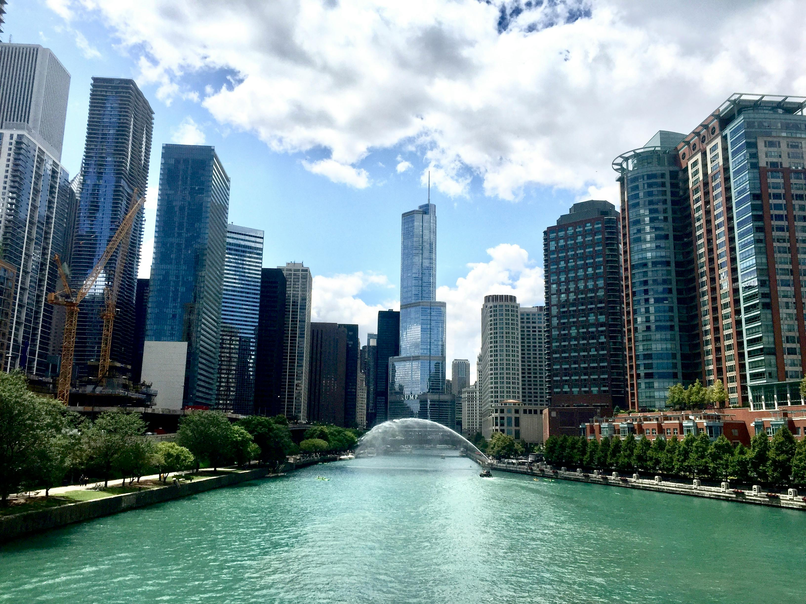

Chicago Illinois • Windy City
Welcome Home
Enjoy What Chicago Has To Offer
A city with diverse culture, food, and entertainment
What is Special about the chi?

River between trees and city skyscrapers by Heather B pexels
Foodies may indulge in deep-dish pizza and international cuisine, while sports fans can root for great teams, making Chicago a diversified city with something for every visitor.
The united center

Aerial View of City Buildings During Sunset by Leon Macapagal pexels
Where Bulls Fans Are Made
- The United Center is the home venue for the Chicago Bulls (NBA) and Chicago Blackhawks (NHL), and fans have witnessed these teams' remarkable success, including several championships.
- Massive Venue Capacity: As one of North America's largest arenas, the United Center can accommodate up to 23,500 people for concerts and other events, making it a popular location for major sporting, entertainment, and live music events.
- Michael Jordan Statue and Legacy: Outside the United Center stands the famed Michael Jordan statue, which honors his accomplishments to the Bulls and cements the venue's role as a historic monument for basketball fans around the world.
Cloud Gate

Cloud Gate in Chicago by Alberto Chavezpexels
Breath taking experience
- Cloud Gate, popularly known as "The Bean," is a 110-ton stainless steel sculpture created by Anish Kapoor. Its sleek, mirrored surface reflects Chicago's skyline, creating eye-catching visual effects.
- Interactive Experience: Located in Millennium Park, it encourages visitors to interact, walk beneath its 12-foot-high arch, and take photos with its distorted yet spectacular reflections of the city and themselves.
- Cloud Gate, installed in 2006, has become a symbol of Chicago, bringing millions of visitors each year and confirming its status as one of the city's most photographed sights.
Garfield Park Conservatory

Madrid, Community of Madrid, Spain by Jo Kassis pexels
Botanical Conservatories
- diversified Plant Collection: Garfield Park Conservatory houses one of the country's largest and most diversified plant collections, with over 600 plant species spread over numerous climate-controlled habitats.
- Iconic Historical Design: Designed by renowned landscape architect Jens Jensen and opened in 1908, the conservatory is known for its "landscape art under glass," which includes naturalistic elements such as cascading ferns and a large glass dome.
- Community Engagement and Education: In addition to its magnificent plant displays, the conservatory provides hands-on educational programs, workshops, and events for people of all ages, making it a center for community learning and environmental consciousness in Chicago.
Navy Pier

Chicago Cityscape by Pixabay Pexels
Come Here To Navy Pier
- Navy Pier's iconic attractions include the Centennial Wheel, which provides breathtaking views of Lake Michigan and the Chicago cityscape, as well as a vintage carousel, interactive exhibits, and seasonal outdoor movies.
- Add mint leavesDining and Entertainment: The pier has a variety of eateries, ranging from typical Chicago deep-dish pizza joints to gourmet dining options, as well as live entertainment, like as concerts, theatrical performances, and special events like fireworks displays in the summer.
- Navy Pier is home to various cultural organizations, including the Chicago Shakespeare Theater and the Crystal Gardens, a magnificent indoor botanical garden that serves as a focus for arts and culture in Chicago.